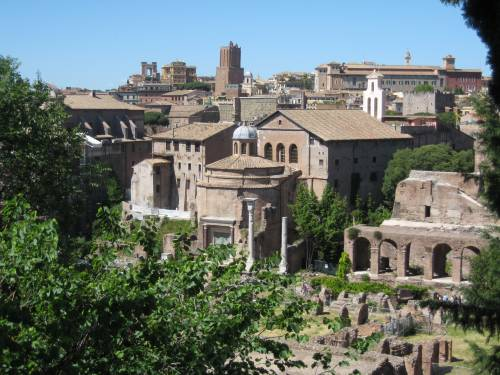

ROOMA
Ikuinen kaupunki
Rooman historia
Legendan mukaan Rooman ovat perustaneet kaksoisveljet Romulus ja Remus, jotka syntymänsä jälkeen päätyivät ajelehtimaan Tiber-jokeen.
Roomalainen historioitsija Titus Livius kertoo asiasta näin: "Kelluva kaukalo, johon pojat oli pantu, pysähtyi matalassa vedessä rantaan, ja läheisiltä vuorilta janoissaan lähtenyt naarassusi suuntasi silloin kulkunsa sinne mistä kuuli lasten itkua. Se oli tarjonnut pienokoisille nisäänsä niin lauhkeana, että kun kuninkaan karjanhoitaja osui paikalle, hän tapasi sen nuoleskelemassa poikia kielellään".
Rooman ydin on kasvanut seitsemän kukkulan (Aventinus, Caelius, Capitolium, Esquilinus, Palatium, Quirinalis ja Viminalis) ympärille. Rooma on kätevän kokoinen kaupunki, jossa on helppo liikkua. Ennen matkaa on hyvä tutustua Italian, Lazion ja Rooman karttoihin ja etsiä jo valmiiksi omien suosikkikohteiden sijainnit. Näin et päädy harhailemaan turhaan kaduille, vaan löydät helposti mitä olet etsimässä.
© copyright Roomaan.fi | kaikki oikeudet pidätetään